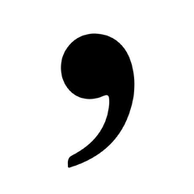

GitHub · 今日发现
开源自动驾驶
装进三百多款车
AI 记住你的话
文档秒变 PPT
今天这几个，挺有意思
100m80m60m40m20m
#01 今日涨星最高
AI 有长期记忆
topoteretes /
cognee

给 AI 装上跨会话长期记忆，自托管知识图谱
+808
今日涨星 · 24.0K 总星
#02 文档秒变 PPT
AI 一键做 PPT
hugohe3 /
ppt-master

丢份文档进去，AI 直接生成能编辑的真 PPT
+589
今日涨星 · 33.0K 总星
#02 文档秒变 PPT
AI 一键做 PPT
hugohe3 /
ppt-master
真 PPT · 形状动画保留 · 语音备注自动念 · 套你自己的模板
+589
今日涨星 · 做汇报的人估计会喜欢
#03 最反直觉
开源自动驾驶
commaai /
openpilot

开源驾驶辅助系统，装进三百多款车
300+
支持车型 · 不用等车企更新
#03 最反直觉
开源自动驾驶
commaai /
openpilot
自己就能给老车升级，玩自动驾驶的几乎都知道它
62.1K ★
总星数 · 今日 +322 · Fork 11.1K
| 00| 25| 50| 75| 99
#04 付费工具平替
免费 SEO 工具
every-app /
open-seo

付费 SEO 工具的开源替代，一年几千订阅费省了
+230
今日涨星 · 3.4K 总星
#05
微软官方 · 快速带过
微软系统工具集
microsoft / PowerToys

135.7K ★
老牌项目
让 AI 记住你，
还是让 AI 做 PPT？
还是让 AI 做 PPT？
你最想试试哪个？关注我，下期见